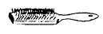
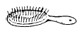
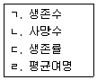

이용사 (2004-10-10 기출문제)
1과목: 임의 과목 구분
1. 건강한 성인의 정상적인 두발을 세발할시 일반적으로 사용하는 비누의 성분은?
- 강산성
- 강알칼리성
- 약산성
- 중성 및 약알칼리성
(정답률: 72%)

2. 아이론은 어느나라에서 몇년도에 처음으로 사용하였는가?
- 영국, 1800년
- 미국, 1900년
- 불란서, 1875년
- 독일, 1880년
(정답률: 58%)
3. 두발의 탈염(color remove, 또는 dye remove)이란?
- 두발부분만 염색하는 것.
- 두발에 염모제를 사용하여 물을 들이는 것.
- 두발의 색을 빼어내거나 제거 시키는 것.
- 염모제로 염색된 두발의 새로자란 부분만을 물을 들이는 것.
(정답률: 82%)
4. 면체시 면도 잡는 기본적인 방법에 해당되지 않는 것은?
- 프리핸드
- 백핸드
- 노말핸드
- 스틱핸드
(정답률: 78%)
5. 아이론을 가열하여 그 열에 의해서 만든 웨이브는?
- 퍼머넨트 웨이브
- 마셀웨이브
- 콜드웨이브
- 휭거웨이브
(정답률: 78%)
6. 스캘프 트리트먼트(scalp treatment)는 다음 중 어느 것과 관계가 있는가?
- 손톱손질
- 기구손질
- 두피손질
- 브러시손질
(정답률: 92%)
7. 손가락이나 손바닥으로 피부를 비비거나 문지르는 마사지 방법은?
- 진동법
- 압박법
- 고타법
- 경찰법
(정답률: 73%)
8. 미안용 적외선등의 효과에 대한 설명 중 틀린 것은?
- 피부에 온열 자극을 준다.
- 혈액순환이 촉진된다.
- 피부가 확장되어 땀구멍을 닫게 한다.
- 팩재료의 건조를 촉진한다.
(정답률: 71%)
9. 인류 최초의 이발사는 어느 계층에서 나왔는가?
- 농민
- 평민
- 천민
- 귀족
(정답률: 76%)
10. 다음 중에서 조발술에서 중간머리 처리에 가장 적합한 가위는 어느 것인가?
- 톱가위 No.18
- 톱가위 No.25
- 톱가위 No.30
- 톱가위 No.45
(정답률: 35%)
11. 우리나라 최초의 이용사는?
- 김홍집
- 안종호
- 유길준
- 대원군
(정답률: 87%)
12. 조발시 빗으로 가늠하여 깎는 작업 중 빗의 어느 부분을 중심으로 해서 잘라야 하는가?
- 빗살 끝
- 빗살 중심
- 빗살 뿌리
- 빗등, 빗몸체
(정답률: 20%)
13. 염색 시술시 일반적으로 원하는 색깔보다 짙은 색으로 염색을 해야 좋은 계절은?
- 봄
- 여름
- 가을
- 겨울
(정답률: 75%)
14. 시술시 드라이어, 빗, 브러쉬(brush솔)를 모두 함께 사용하는 때는?
- 정발시
- 세발시
- 조발시
- 면체술시
(정답률: 86%)
15. 정발시 두발을 아이롱하는 주된 목적은?
- 두발의 질을 좋게 하기 위하여
- 고객을 기분좋게 하기 위하여
- 두발의 머리형을 갖추기 위해
- 두피를 튼튼하게 단련시키기 위하여
(정답률: 94%)
16. 정발시 두발에 포마드를 바르는 방법에 대한 설명 중 가장 옳은 것은?
- 손가락 끝으로만 발라야 한다.
- 두발의 표면만을 바르도록 하여야 한다.
- 시술순서는 우측두부-좌측두부-후두부 순으로 바른다.
- 포마드를 바를시 머리(두부)가 흔들리지 않도록 해야 한다.
(정답률: 80%)
17. 이발에 해당 없는 것은?
- 조발
- 면도
- 삭발
- 귀소제
(정답률: 86%)
18. 드라이어 정발시 체계적인 드라이어 정발 순서로서 가장 먼저 시술해야 할 두부 부위는?
- 가리마 부분
- 측두부
- 두정부
- 뒷머리 부분
(정답률: 79%)
19. 두발 영양관리에 있어서 두발에 영양분이 부족하면 나타나는 현상 중 잘못된 것은?
- 두발 끝이 갈라진다.
- 두발이 부스러진다.
- 두발이 굵고 억세진다.
- 두발에 탈지현상이 나타난다.
(정답률: 76%)
20. 다음 브러쉬의 종류 중 훼이스 브러쉬(face brush)에 해당되는 것은?


(정답률: 68%)
2과목: 임의 과목 구분
21. 환경오염지표와 관련해서 연결이 바르게 된 것은?
- 수소이온농도-음료수오염지표
- 대장균-하천오염지표
- 용존산소-대기오염지표
- 생물학적 산소요구량-수질오염지표
(정답률: 38%)
22. 생후 6개월 이내에 기본접종을 실시하는 전염병이 아닌것은?
- 경구용 폴리오, B형 간염
- 디프테리아, 백일해
- 결핵, 파상풍
- 콜레라, 홍역
(정답률: 42%)
23. 다음 중 인공능동면역의 특성을 가장 잘 설명한 것은?
- 항독소(antitoxin)등 인공제제를 접종하여 형성되는 면역
- 생균백신, 사균백신 및 순화독소(toxoid)의 접종으로 형성되는 면역
- 모체로부터 태반이나 수유를 통해 형성되는 면역
- 각종 전염병 감염 후 형성되는 면역
(정답률: 73%)
24. 조선시대 의료 담당 기관에 대한 내용 중 틀린 것은?
- 혜민서-서민치료
- 활인서-전염병 관리
- 내의원-왕실치료
- 전의감-의약품 관리
(정답률: 52%)
25. 식중독의 분류가 맞게 연결된 것은?
- 세균성-자연독-화학물질-수인성
- 세균성-자연독-화학물질-곰팡이독
- 세균성-자연독-화학물질-수술전후 감염
- 세균성-외상성-화학물질-곰팡이독
(정답률: 55%)
26. 다음 중 산업재해방지 대책과 무관한 내용은?
- 생산성 향상
- 안전관리
- 정확한 관찰과 대책
- 정확한 사례조사
(정답률: 88%)
27. 다음 중 체온조절기능에 대한 설명으로 맞는 것은?(오류 신고가 접수된 문제입니다. 반드시 정답과 해설을 확인하시기 바랍니다.)
- 신체는 환경과의 열교환 현상은 없다.
- 인체는 화학적 조절기능으로 체내에서 열생산을 한다.
- 피부는 열방산기능보다 열생산기능이 더 활발하다.
- 신체는 신진대사만으로 열을 생산한다.
(정답률: 39%)
28. 생명표의 표현에 사용되는 함수들은?

- ㄱ. ㄴ. ㄷ
- ㄱ. ㄷ
- ㄴ. ㄹ
- ㄱ. ㄴ. ㄷ. ㄹ
(정답률: 55%)
29. 100℃의 유통증기 속에서 30분 내지 60분간 멸균시킨 다음 20℃이상의 실온에서 24시간 방치하는 방법을 3회 반복하는 멸균법은?
- 열탕소독법
- 간헐멸균법
- 건열멸균법
- 고압증기멸균법
(정답률: 38%)
30. 인체에 질병을 일으키는 병원체 중 살아있는 세포에서만 증식하고 크기가 가장 작아 전자현미경으로만 관찰할 수 있는 것은?
- 구균
- 간균
- 원생동물
- 바이러스
(정답률: 79%)
31. 고압증기법은 121℃에서 가압하여 멸균한다. 이 때의 가압정도는 다음 어느 것이 적당한가?
- 2기압
- 4기압
- 3기압
- 1기압
(정답률: 47%)
32. 일광소독에서 살균작용을 하는 인자는?
- 적외선
- 자외선
- X-선
- 가시광선
(정답률: 76%)
33. 소독용 석탄산의 결점(단점)은?
- 금속 부식성이 있다.
- 살균력이 안정함
- 피부점막에 대한 자극성이 없음
- 강한 소독력이 있다.
(정답률: 62%)
34. 화학적 소독제 중 살균력 평가의 지표가 되는 것은?
- 크레졸
- 과산화수소
- 석탄산
- 염소
(정답률: 61%)
35. 피부를 데었을 때(화상)의 치료약품은?
- 암모니아수
- 바세린
- 과산화수소
- 머큐롬
(정답률: 63%)
36. 일반적으로 자비소독법으로 사멸되지 않는 것은?
- 아포형성균
- 콜레라균
- 임균
- 포도상구균
(정답률: 79%)
37. 단백질응고작용과 관계가 없는 것은?
- 포르말린
- 알콜
- 과산화수소
- 석탄산
(정답률: 26%)
38. 화학적 소독제의 조건으로 가장 타당하지 않는 것은?
- 가격이 저렴할 것
- 독성 및 안전성이 약할 것
- 살균력이 강할 것
- 융해성이 높을 것
(정답률: 77%)
39. 빌딩이나 건물의 냉온방 및 환기시스템을 통해 전파가능한 질환은?
- 레지오네르즈
- B형간염
- 농가진
- AIDS
(정답률: 43%)
40. 고압증기 멸균법의 단점은?
- 멸균비용이 많이 든다.
- 많은 멸균 물품을 한꺼번에 처리할 수 없다.
- 멸균물품에 잔류독성이 있다.
- 수증기가 통과하므로써 용해되는 물질은 멸균할 수 없다.
(정답률: 52%)
3과목: 임의 과목 구분
41. 여드름 치료에 대한 설명 중 잘못된 것은?
- 여드름 악화전 손으로 짜낸다.
- 적외선 조사에 맛사지를 병행한다.
- 여드름 발생 초기에 비타민C를 매일 복용한다.
- 피로가 누적되지 않게 하며, 숙면을 취한다.
(정답률: 94%)
42. 3가지 기초식품군이 아닌 것은?
- 비타민
- 탄수화물
- 지방
- 단백질
(정답률: 79%)
43. 다음 중 자외선을 통해 피부에서 합성되는 것은?
- 비타민 K
- 비타민 C
- 비타민 D
- 비타민 A
(정답률: 69%)
44. 다음 중 기초화장품의 주된 사용 목적에 속하지 않는 것은?
- 세안
- 피부채색
- 피부정돈
- 피부보호
(정답률: 86%)
45. 비만을 관리하는 방법 중 성격이 다른 것은?
- 지방흡입수술을 한다.
- 소장절제술을 행한다.
- 약물을 복용한다.
- 아로마 오일을 이용한다.
(정답률: 77%)
46. 피부문제 유발요인 중 하나인 스트레스의 강도가 가장 큰 것은?
- 배우자의 사망
- 임신
- 이사
- 결혼
(정답률: 57%)
47. 레인방어막 아랫부분의 산도와 수분량은?
- 약산성, 78∼80%의 수분량
- 약산성, 10∼20%의 수분량
- 약알칼리성, 70∼80%의 수분량
- 약알칼리성, 10∼20%의 수분량
(정답률: 34%)
48. 피부상태를 측정분석하는 기구로 그 양상이 색깔로 나타나는 피부미용기기는?
- 확대경
- 석션기(진공흡입기)
- 우드램프
- 스팀기
(정답률: 61%)
49. 다음중 여드름을 유발하지 않는(noncomedogenic) 화장품 성분은?
- 올레인 산
- 라우린 산
- 솔비톨
- 올리브 오일
(정답률: 75%)
50. 다음은 각 피부질환의 증상을 설명한 것으로 옳은 것은?
- 무좀 : 홍반에서부터 시작되며 수 시간후에는 구진이 발생된다.
- 지루 피부염 : 기름기가 있는 인설(비듬)이 특징이며 호전과 악화를 되풀이하고 약간의 가려움증을 동반한다.
- 수족구염 : 홍반성 결절이 하지부 부분에 여러 개 나타나며 손으로 누르면 통증을 느낀다.
- 여드름 : 구강내 병변으로 동그란 홍반에 둘려싸여 작은 수포가 나타난다.
(정답률: 63%)
51. 이.미용 영업자의 지위를 승계한자는 며칠 이내에 관할기관에 신고를 하여야 하는가?
- 15일
- 즉시
- 1월이내
- 1주일
(정답률: 53%)
52. 이．미용업소의 폐쇄명령을 받은자가 동일 장소에서 그 영업을 할수 없는 기간은?
- 6개월
- 제한없음
- 1년 6개월
- 1년
(정답률: 66%)
53. 다음은 법률상에서 정의되는 용어이다. 바르게 서술된 것은 다음 중 어느 것인가?
- 위생관리 용역업이란 공중이 이용하는 시설물의 청결 유지와 실내공기정화를 위한 청소 등을 대행하는 영업을 말한다.
- 미용업이란 손님의 얼굴과 피부를 손질하여 모양을 단정하게 꾸미는 영업을 말한다.
- 이용업이란 손님의 머리, 수염, 피부 등을 손질하여 외모를 꾸미는 영업을 말한다.
- 공중위생영업이란 미용업, 숙박업, 목욕장업, 수영장업, 유기영업 등을 말한다.
(정답률: 29%)
54. 면허가 취소된 후 계속하여 업무를 행한 자에게 처해지는 벌칙은 다음 중 어느 것인가?
- 6월 이하의 징역 또는 500만원 이하의 벌금
- 1년 이하의 징역 또는 1천만원 이하의 벌금
- 300만원 이하의 벌금
- 200만원 이하의 과태료
(정답률: 32%)
55. 과태료 처분권자가 과태료를 처분하고자 할 때에는 몇 일 이상의 기간을 정하여 과태료처분대상자에게 구술 또는 서면에 의한 의견진술의 기회를 주어야 하는가?(오류 신고가 접수된 문제입니다. 반드시 정답과 해설을 확인하시기 바랍니다.)
- 7일
- 3일
- 10일
- 15일
(정답률: 31%)
56. 미용업자가 점빼기, 귓볼뚫기, 쌍꺼풀수술, 문신, 박피술기타 이와 유사한 의료행위를 하여 1차 위반했을 때의 행정처분은 다음 중 어느 것인가?
- 면허취소
- 경고
- 영업장 폐쇄명령
- 영업정지 2월
(정답률: 40%)
57. 영업소 안에 면허증을 게시하도록 위생관리 기준으로 명시한 경우는?
- 세탁업을 하는 자
- 목욕장업을 하는 자
- 미,이용업을 하는 자
- 위생관리용역업을 하는 자
(정답률: 72%)
58. 공중위생영업을 하고자 하는 자가 필요로 하는것은?
- 통보
- 인가
- 신고
- 허가
(정답률: 77%)
59. 공중위생영업자는 그 이용자에게 건강상 ( )이(가) 발생하지 아니하도록 시설을 관리해야 한다. ( )속에 알맞은 것은?
- 악영향
- 질병
- 위해요인
- 장해
(정답률: 51%)
60. 이ㆍ미용사의 면허를 받을 수 없는 자는?
- 고등학교 또는 이와 동등의 학력이 있다고 교육인적 자원부장관이 인정하는 학교에서 이용 또는 미용에 관한 학과를 졸업한 자
- 교육인적자원부장관이 인정하는 고등기술학교에서 6개월 이상 이용 또는 미용에 관한 소정의 과정을 이수한 자
- 국가기술자격법에 의한 이용사 또는 미용사의 자격을 취득한 자
- 전문대학 또는 이와 동등 이상의 학력이 있다고 교육인적자원부장관이 인정하는 학교에서 이용 또는 미용에 관한 학과를 졸업한 자
(정답률: 79%)